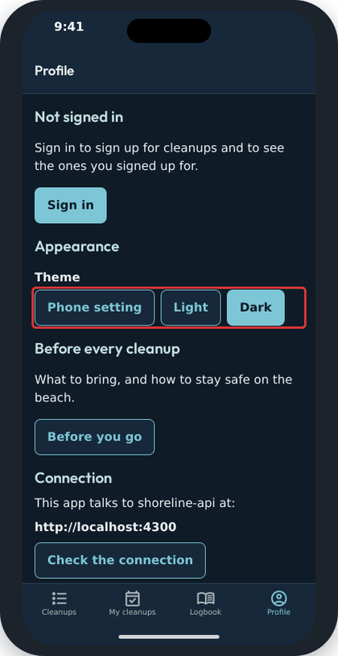
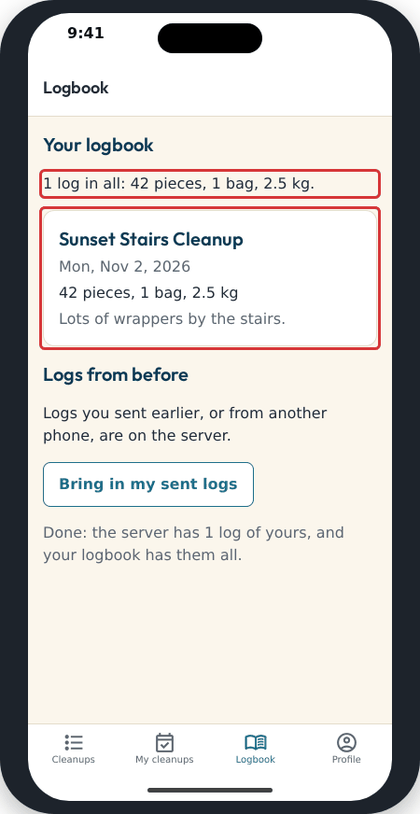
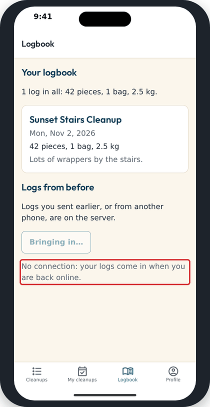

💾 Lesson 5.3: Storing Data on the Device
Close a browser tab and open the site again: the server still has everything. Force-quit a phone app and open it again, and it starts with whatever it saved on the phone, and nothing else. Today you decide what Shoreline Crew keeps, and where: the sign-in in the phone's lockbox, a small setting in a key-value store, and a logbook of debris logs in a real database that opens on a beach with no signal.
🎯 Learning Objectives
By the end of this lesson, you will be able to:
- Choose between AsyncStorage, SecureStore and SQLite for a piece of data, and say what survives a restart, an update and an uninstall
- Save a small setting with AsyncStorage, check it when you read it back, and apply it before the first screen appears
- Create a SQLite table, write rows with
?values, and ask questions across them (newest first, totals) - Give a database a version number and a migration, so a later version of the app can change its tables safely
- Read data from the phone through the TanStack Query cache, without waiting for a network it does not need
- Set up the web preview for SQLite and know where it differs from a phone
📦 Code for this lesson
Starting code: lesson-17-start.zip · Finished code: lesson-17-end.zip. Each folder has a README with the commands to run it.
In This Lesson
👋 Welcome: What a Phone Remembers
If you tried last lesson's "Before the Next Lesson" task, you saw the split already. After a force-quit, Shoreline Crew still knew who you were (Lesson 4.3 saved the session in SecureStore), but the Cleanups list started with "Loading cleanups…": the TanStack Query cache lives in memory, and a closed app has no memory left. Everything a phone app keeps between launches, it keeps because someone wrote it to the phone's storage on purpose.
The web course had this choice too, and it was easy: the server keeps the real data, the browser keeps a token in sessionStorage and maybe a preference in localStorage. A phone app has more reasons to keep things itself. It opens with no signal, it is closed by the system without warning when memory runs low, and people expect it to look the way they left it.
By the end of today:
- You can pick the right storage for a piece of data, and explain the choice to a teammate.
- Profile has a Theme choice (phone setting, light, dark) that the app remembers and applies before the first screen.
- The Logbook tab is real: your sent debris logs, in a SQLite database on the phone, with totals, readable with no signal.
Why it matters for your work: "where does this live?" is one of the first questions in any mobile code review. Tokens in plain storage are a security finding, a setting that flickers on every launch is a bug report, and a database without a migration plan is next year's data-loss incident. These are small decisions with long tails.
Why it matters for the volunteers: a crew leader opens the app at a beach with no signal to see what the team logged last month. If that history lives only on the server, the app has nothing to show.
🌱 A little SQL goes a long way
If you have never written SQL, today has a few lines of it. You do not need to master databases to use one well in an app: four kinds of statement cover almost everything Shoreline Crew does, and the lesson explains each one. If a query fails, the error names what SQLite did not understand, which is feedback you can read.
🗄️ Three Places to Keep Things
Expo gives a phone app three main places to store data (and a file system, which Lesson 6.2 uses for photos and Lesson 6.5 for shared files). They differ in what they hold, how safe it is, and how you ask for it:
| AsyncStorage | SecureStore | SQLite (expo-sqlite) | |
|---|---|---|---|
| Holds | Text under a key (store objects as JSON) | Short text under a key | Tables of rows with the same columns |
| Protected | No: plain files in the app's private folder | Yes: the iOS Keychain, or values encrypted with the Android Keystore | No: a plain database file in the app's private folder |
| You ask | "The value for this key" | "The value for this key" | Anything SQL can say: filter, sort, count, add up |
| Good for | Settings, small flags, "seen this tip" | Tokens, keys, anything secret | Many records you search, sort or total; offline data |
| Not for | Secrets; hundreds of records | Anything big (Expo's documentation warns some iPhones reject values over about 2,048 bytes) | Secrets (not encrypted); one small setting |
| Shoreline Crew keeps | The theme choice (src/state/settings.ts) | The session (src/auth/session.ts, Lesson 4.3) | The logbook (src/storage/logbook.ts) |
| In the web preview | The browser's localStorage (measured) | Nothing: not available (Lesson 4.3) | A WebAssembly SQLite in the browser's private file storage (measured, with setup: below) |
All three are asynchronous: every read and write returns a promise, because the phone answers from storage, not from memory. That is the main thing to unlearn from localStorage, which answers at once. It also means the app's first frame cannot "just read" a saved value: it has to wait for it, or draw something else first. Shoreline Crew already waits for the session behind the splash screen, and today the settings join it.
💡 Mental model: the crew van
Shoreline Crew's van has three places for paper. A clipboard on the dashboard holds the few things you check every trip (which radio channel, the lights setting): that is AsyncStorage. A lockbox under the seat holds the keys and the permit: SecureStore. A ruled ledger in the glove box has a line for every bag the crew ever collected, with the same columns on every line, so you can add up a season in a minute: SQLite. Nobody keeps the permit on the clipboard, and nobody writes a season of bags on a sticky note.
What survives what
"Stored on the phone" is not forever. According to the Expo and platform documentation:
| Event | Memory (the Query cache) | AsyncStorage, SQLite | SecureStore |
|---|---|---|---|
| Force-quit, or the system closes the app | Gone | Kept | Kept |
| An app update (from a store, or an update in Lesson 9.3) | Gone | Kept: your new code must read the old data (migrations) | Kept |
| "Clear data" (Android settings) or uninstall | Gone | Gone | Gone on Android; on iOS, Keychain items can survive an uninstall (Lesson 4.3) |
| A new phone | Gone | Only if the platform's backup copies it | Not on Android: the config plugin leaves it out of backups (Lesson 4.3) |
The rule that follows: the phone keeps copies; the server keeps the truth. Anything that matters to the crew must eventually reach shoreline-api. The logbook you build today is a copy of logs the server already has, which is why a "Bring in my sent logs" button can always rebuild it.
🧩 Version note: AsyncStorage 2.2, not 3
npm's newest @react-native-async-storage/async-storage is a 3.x version, but Expo SDK 58 pins 2.2.0, the version built into Expo Go. npx expo install picks it for you. Articles about AsyncStorage 3 describe a newer API; everything in this lesson is the 2.2 API (getItem, setItem, removeItem), which version 3 still has according to its documentation.
🔑 AsyncStorage: Small Settings
AsyncStorage is localStorage with promises. Three methods do almost all the work:
import AsyncStorage from '@react-native-async-storage/async-storage';
await AsyncStorage.setItem('shoreline-crew-settings', JSON.stringify({ theme: 'dark' }));
const saved = await AsyncStorage.getItem('shoreline-crew-settings'); // string | null
await AsyncStorage.removeItem('shoreline-crew-settings');Values are strings, so objects go through JSON.stringify and JSON.parse, exactly as in the browser. Shoreline Crew keeps all its settings in one key as one small JSON object: one read at startup, one write per change, and Lesson 6.4 can add the reminders switch without a second key.
Read it back like API data
What comes out of storage was written by some earlier version of your app, on a phone you have never seen. The web course taught you to check data from the API before trusting it; data from the phone gets the same treatment. Shoreline Crew's settings store parses the saved text, keeps a theme only if it is one of the three it knows, and falls back to the default otherwise. Measured in the web preview: a saved {"theme":"sepia"} opened with Phone setting chosen, and a saved {not json did too, with a warning in the console instead of a broken app.
Before the first frame
The theme decides the colors of the very first screen. If the app drew first and read the setting second, a volunteer who chose Dark would see a white flash on every launch. The root layout already holds the splash screen until the fonts and the session are loaded; the settings load at the same time (Promise.all), so the splash hides on a screen that is already in the right colors. On a phone that read takes a moment; in the web preview it reads localStorage (measured: the app saved the key shoreline-crew-settings there).
One reader for the theme
Lesson 2.5 made useTheme() the single place that decides light or dark, and every component and style sheet asks it. That pays off today: useTheme reads the choice and the phone's setting, and nothing else in the app changes. The navigation theme, the status bar icons and every createThemedStyles sheet follow by themselves.
🛑 Never put a token or a password in AsyncStorage
AsyncStorage files are not encrypted. On a rooted or jailbroken phone, in some backups, or in a debugging tool, they are readable text. Tokens go in SecureStore (Lesson 4.3), passwords nowhere at all. A good habit for code review: search the project for AsyncStorage.setItem and read what each call saves.
🗃️ SQLite: A Database in the App
SQLite is a complete SQL database in a single file, and it is already inside iOS and Android. expo-sqlite gives JavaScript a way to talk to it, and Expo Go includes it (no development build needed, according to Expo's documentation). The database file sits in the app's private folder, so another app cannot open it, but it is not encrypted.
Why not AsyncStorage for the logbook?
You could store the logbook as one big JSON array under one key. It works for ten logs. Then a crew leader has three hundred: every new log means reading the whole array, parsing it, adding one item, writing it all back, and the totals screen adds up every log in JavaScript on each visit. A database keeps each log as a row in a table, adds one row without touching the others, and answers questions like "this volunteer's logs, newest first" or "the total weight" itself. That is the job SQLite is for: many records with the same fields that you search, sort or total. (Lesson 5.5's queue of logs waiting to be sent uses AsyncStorage on purpose: it is a handful of items, read and written whole.)
Four statements
Shoreline Crew's logbook needs four kinds of SQL statement. Each one in a sentence:
| Statement | What it does | In the logbook |
|---|---|---|
CREATE TABLE sent_logs (…) | Makes a table: column names, a type for each (TEXT, INTEGER, REAL for decimals), NOT NULL where a value is required, and a PRIMARY KEY (what makes a row unique) | Once, the first time the database opens |
INSERT OR REPLACE INTO sent_logs (…) VALUES (?, ?, …) | Adds a row; if a row with the same primary key exists, replaces it | Each log brought in from the server (the same log twice stays one row) |
SELECT … FROM sent_logs WHERE volunteer_id = ? ORDER BY recorded_at DESC | Reads the rows that match, sorted | The entries on the Logbook screen, newest first |
SELECT COUNT(*), SUM(pieces), … FROM sent_logs WHERE … | Adds up across the matching rows into one answer row | "1 log in all: 42 pieces, 1 bag, 2.5 kg." |
The primary key is (volunteer_id, client_id), the same pair shoreline-api uses to recognize a log it already has: every log carries a clientId made by the phone that recorded it (Lesson 5.4 makes them). On a phone shared by two volunteers, WHERE volunteer_id = ? keeps each logbook to its owner, the database version of last lesson's "the viewer is in the key".
Values go in ?, never into the SQL text
Every ? in a statement is a placeholder that SQLite fills in with a value you pass separately, in the same order. The value is never read as SQL, so a note like Theo's bag split by the stairs is stored as written. Build the statement with a template string instead, and the apostrophe ends the SQL string early. Measured in the web preview:
Expected output
Error: Error code 1: near "s": syntax errorThat is the friendly version. The unfriendly one is a note written to change the SQL on purpose (SQL injection). The rule is short: data goes in ? values; only your own fixed text goes in the SQL.
The expo-sqlite methods
| Method | Use it for |
|---|---|
SQLite.openDatabaseAsync('logbook.db') | Open (or create) a database file; you get a database object |
db.execAsync(sql) | Fixed SQL with no values, possibly several statements (creating tables) |
db.runAsync(sql, ...values) | A write with ? values (insert, update, delete) |
db.getAllAsync<Row>(sql, ...values) | Every matching row, as an array of objects |
db.getFirstAsync<Row>(sql, ...values) | The first row, or null |
db.withTransactionAsync(async () => …) | Several statements that succeed or fail together |
Every method has a synchronous twin (execSync, getAllSync…). Shoreline Crew uses only the async ones: a sync call blocks the JavaScript thread, so a slow query would freeze taps and animations, and in the web preview the sync methods need extra setup (below). The <Row> type parameter tells TypeScript what a row looks like; it does not check it. Rows written by your own code with your own columns are as trustworthy as your code, which is why the SQL renames columns to match the type (client_id AS clientId).
🧱 Tables That Change Later
A web app's database lives on one server, and the team changes its tables once, with a migration. A phone app's database lives on every phone that installed the app, and you never get to log in to any of them. When version 2 of Shoreline Crew needs a new column, the new code runs on phones whose database files were made by version 1, and on fresh installs, and on a phone that skipped a version. The code itself has to bring each file up to date.
SQLite keeps a number in every database file for exactly this: PRAGMA user_version, 0 in a new file. Shoreline Crew's logbook reads it when it opens the database and runs each missing step in order:
- Version 0 (a new file): create
sent_logs, then set the number to 1. - Version 1: nothing to do today. A later lesson that adds a column adds
if (version < 2) { ALTER TABLE … }and sets 2.
The steps and the new number run in one transaction: if a step fails, SQLite rolls everything back, and the file keeps its old tables and its old number, ready to try again on the next launch. Two habits from the expo-sqlite documentation keep this safe: never delete a user's database to get past a migration error, and never edit a step that has already shipped (write a new one).
💡 Why not just CREATE TABLE IF NOT EXISTS?
It is fine for a first version, and many examples use it. It answers "is there a table?", not "which version of the table is it?". The day you add a column, an old file already has the table, so IF NOT EXISTS skips it, and the first query that names the new column fails on every phone that updated. The version number answers the question you will need later; today it costs five lines.
One more decision: one connection for the whole app. src/storage/logbook.ts opens the database the first time a function needs it and keeps the promise, so every later call shares it. (expo-sqlite also has a <SQLiteProvider> component and a useSQLiteContext() Hook for apps that read the database from many components. Shoreline Crew reads it in one place, through the query cache, so a plain module is simpler.)
🔄 Phone Data in the Query Cache
The Logbook screen could read SQLite in a useEffect. But you already have a tool that tracks loading, errors, refetching and "something changed, read it again": TanStack Query does not care where a queryFn gets its answer. logbookQuery(viewer) reads the database, and the bring-in mutation invalidates ['logbook'] when it has written new rows, so the screen reads again by itself. Same pattern as last lesson, with the phone as the server.
Two options are different for data that lives on the phone:
networkMode: 'always'. Since last lesson, TanStack Query knows when the phone is offline, and its default mode pauses any query that would need to fetch. That is right for the API and wrong for a database on the phone: the logbook must open on a beach with no signal. Measured in the web preview with the browser reporting "offline": with'always', the Logbook tab opened at once; without it, it stayed on "Opening your logbook…" until the connection came back.staleTime: Infinity. Nothing changes the logbook behind the app's back: only the app writes it, and every write invalidates the query. So the answer never goes stale by itself, and screens never re-read it just because time passed.
The bring-in itself stays an ordinary mutation with the default network mode: it asks the API, so it should wait for a connection. Offline, the button says "Bringing in…", the screen says "No connection: your logs come in when you are back online.", and the entries already on the phone stay on screen (measured, pictured in the project).
🧭 What Lesson 5.5 builds on this
Today's storage layer is the base for Offline First. Lesson 5.5 adds a queue of debris logs that are not yet sent, kept with AsyncStorage through Zustand's persist middleware (the Zustand you know from the web course, plus storage), and when a queued log is sent, it goes into this same sent_logs table. The settings store you write today is plain AsyncStorage on purpose: one small object needs no library, and you will see exactly what persist saves you from writing.
🌐 SQLite in the Web Preview
A browser has no SQLite built in, so expo-sqlite's web version is SQLite compiled to WebAssembly (a .wasm file), running in a background worker and saving the database in the browser's private file storage (the Origin Private File System). The course measured what it needs with SDK 58:
| Setup | What happened in the web preview |
|---|---|
| Nothing added | The web bundle fails: Metro does not bundle .wasm files (Common Mistakes shows the message). Expo Go and the Android and iOS bundles are unaffected. |
metro.config.js adds wasm to the asset types | Every async method works, in the dev server and in an exported build; the rows were still there after reloading the page |
| The same, calling a sync method | ReferenceError: SharedArrayBuffer is not defined |
| Plus two "cross-origin isolation" headers (the expo-sqlite documentation's setup) | Sync methods work too |
Shoreline Crew uses only async methods, so it needs only the one Metro line. If you ever need the sync methods on the web, the expo-sqlite documentation shows the two headers (Cross-Origin-Embedder-Policy and Cross-Origin-Opener-Policy) for the dev server and for hosting; they also change how a page may load content from other sites, which is why the course leaves them out.
Two habits for the web preview:
- One tab at a time. A second browser tab of the same preview could not open the database while the first had it (measured: "Access Handles cannot be created if there is another open Access Handle…"). Close the extra tab and reload.
- Starting over. The web preview's logbook and settings live in that browser: Chrome's DevTools, Application panel, Storage, Clear site data empties both (and
localStorageshows the keyshoreline-crew-settingson the way). On a phone, uninstalling the app (or Android's Clear storage for Expo Go) does the same.
⚠️ Common Mistakes
Each mistake was made on purpose in a copy of the finished project and quoted as the tools showed it.
⚠️ Forgetting .wasm in Metro's asset types
After npx expo install expo-sqlite, Expo Go keeps working, but the web preview breaks the moment any screen imports the logbook. Without metro.config.js, npx expo export --platform web stopped with (trimmed):
Expected output
env: load .env.local
env: export EXPO_PUBLIC_API_URL
...
Error: Unable to resolve module ./wa-sqlite/wa-sqlite.wasm from ~/shoreline/shoreline-crew/node_modules/expo-sqlite/web/worker.ts:
None of these files exist:
* node_modules/expo-sqlite/web/wa-sqlite/wa-sqlite.wasm(.web.ts|.ts|.web.tsx|.tsx|.web.mjs|.mjs|.web.js|.js|.web.jsx|.jsx|.web.json|.json|.web.cjs|.cjs|.web.scss|.scss|.web.sass|.sass|.web.css|.css)
* node_modules/expo-sqlite/web/wa-sqlite/wa-sqlite.wasm
..."None of these files exist" is misleading: the file is right there. Metro is saying it does not know what to do with a .wasm file, so it looked for other file types instead. The web preview from npx expo start (w) should stop at the same "Unable to resolve" message, since it is the same bundler. The fix is Step 1's metro.config.js, then restart Metro with npx expo start --clear.
⚠️ Reading the phone with the network's rules
Leave networkMode: 'always' out of logbookQuery and nothing complains: tsc, expo lint and the online web preview are all happy. Then, offline, the Logbook tab says "Opening your logbook…" and keeps saying it (measured), because TanStack Query paused a query that never needed the network. Any query whose queryFn reads only the phone gets networkMode: 'always'.
⚠️ Building SQL from data
db.execAsync(`INSERT INTO … VALUES ('${note}')`) works until a note contains an apostrophe, then fails with near "s": syntax error (measured in the web preview; a phone should report the same SQLite message inside its own error text). Pass values as ? placeholders to runAsync, getAllAsync and getFirstAsync.
⚠️ One screen for two people
A first draft of the Logbook screen called useMutation at the top of the screen, above the "not signed in" check. In that version, Theo brought in his logs, signed out, and Amara signed in on the same phone: her empty logbook still said "Done: the server has 1 log of yours, and your logbook has them all." (measured). A mutation's result lives as long as the component that called useMutation, and a tab screen never unmounts. The finished screen puts the signed-in part in its own component, MyLogbook, which signing out unmounts, so the next person starts fresh.
⚠️ Two tabs of the web preview
Open the preview in a second tab while the first is still open, and the second cannot open the database: its Logbook tab said "Something unexpected went wrong. Try again in a moment." with a Try again button (measured; the underlying error is the one in SQLite in the Web Preview). It is a web-preview limit (the browser's file storage allows one writer per file), not a bug in your code: close one tab.
🛠️ Project: Settings and a Logbook
You install AsyncStorage and expo-sqlite, give the web preview what SQLite needs, write a small settings store, let useTheme read the choice, add it to Profile, and build the logbook: a client function for the API's logs, the SQLite storage module, a query and a mutation, and the Logbook screen. Work in shoreline-crew, with shoreline-api running in a second terminal (with --host when you test on your phone, as in Lesson 5.1).
Step 1: Install the two stores, and teach Metro about .wasm (10 min)
Stop Metro with Ctrl+C (also Ctrl+C on a Mac) and install both with Expo's installer, which picks the versions built into Expo Go for SDK 58:
npx expo install @react-native-async-storage/async-storage expo-sqliteExpected output
env: load .env.local
env: export EXPO_PUBLIC_API_URL
› Installing 2 SDK 58.0.0 compatible native modules using npm
> npm install
added 5 packages, and audited 804 packages in 5s
...
8 moderate severity vulnerabilities
...
› Added config plugin: expo-sqliteBoth are native modules ("2 SDK 58.0.0 compatible native modules"), and the vulnerabilities line is npm's audit of the whole project, as in Lesson 5.2: the install worked. package.json now lists "@react-native-async-storage/async-storage": "2.2.0" and "expo-sqlite": "~58.0.17", and the last line says Expo also added expo-sqlite's config plugin to app.json:
],
- "expo-secure-store"
+ "expo-secure-store",
+ "expo-sqlite"
],Like SecureStore's plugin in Lesson 4.3, it only matters for your own builds (Module 9); Expo Go already contains SQLite. Then create metro.config.js in the project folder (next to package.json), so the web preview can bundle SQLite's WebAssembly file:
// Metro, the bundler, with one addition: expo-sqlite runs in the web preview as a WebAssembly
// file (.wasm), and Metro only bundles the file types it has been told about
const { getDefaultConfig } = require('expo/metro-config');
const config = getDefaultConfig(__dirname);
config.resolver.assetExts.push('wasm');
module.exports = config;It starts from Expo's own configuration (getDefaultConfig) and adds one file type, so everything Expo set up stays. Metro reads this file only when it starts: run npx expo start --clear.
Step 2: The settings store (10 min)
Create the folder src/state and, in it, settings.ts. It is the same small-store shape as useSession (Lesson 4.3) and ended.ts (Lesson 5.2): a module variable, listeners, and useSyncExternalStore, plus a load and a save:
// The volunteer's settings, kept on the phone with AsyncStorage (new). Small, not secret, and read
// once at startup; every change is saved at once. Lesson 6.4 adds the reminders switch here.
import AsyncStorage from '@react-native-async-storage/async-storage';
import { useSyncExternalStore } from 'react';
/** 'system' follows the phone's own light or dark setting */
export type ThemeChoice = 'system' | 'light' | 'dark';
export type Settings = {
theme: ThemeChoice;
};
// The key the settings are saved under, as one JSON string
const settingsKey = 'shoreline-crew-settings';
const defaults: Settings = { theme: 'system' };
const themeChoices: ThemeChoice[] = ['system', 'light', 'dark'];
let current: Settings = defaults;
const listeners = new Set<() => void>();
function setCurrent(settings: Settings) {
current = settings;
for (const listener of listeners) {
listener();
}
}
// What was saved is checked like API data: an older version of the app (or a bug) may have
// written something else. Anything unknown falls back to the default.
function fromSaved(saved: string | null): Settings {
const value: unknown = saved === null ? null : JSON.parse(saved);
if (typeof value !== 'object' || value === null || !('theme' in value)) {
return defaults;
}
const theme = themeChoices.find((choice) => choice === value.theme);
return { theme: theme ?? defaults.theme };
}
/** Read the saved settings. Call it once, when the app starts. It never fails. */
export async function loadSettings(): Promise<void> {
try {
setCurrent(fromSaved(await AsyncStorage.getItem(settingsKey)));
} catch (error) {
console.warn('Could not read the saved settings', error);
}
}
/** Change some settings: screens update at once, and the phone saves the new values */
export function changeSettings(changes: Partial<Settings>): void {
setCurrent({ ...current, ...changes });
AsyncStorage.setItem(settingsKey, JSON.stringify(current)).catch((error: unknown) =>
console.warn('Could not save the settings', error),
);
}
function subscribe(listener: () => void) {
listeners.add(listener);
return () => {
listeners.delete(listener);
};
}
/** The current settings; the component draws again when they change */
export function useSettings(): Settings {
// The third function is for the web preview's server, which has no saved settings
return useSyncExternalStore(subscribe, () => current, () => defaults);
}fromSavedchecks the saved text like API data: anything it does not recognize becomes the default. IfJSON.parsethrows,loadSettingscatches it and keeps the defaults.changeSettingsupdates the screens first and saves second, without waiting: the volunteer sees the new theme at once, and a failed save only means the old choice comes back next launch.- The server snapshot (
() => defaults) is for the web preview's server render, the same reason as in Lesson 4.3.
Step 3: The theme follows the choice (10 min)
In src/hooks/useTheme.ts, the one place that decides light or dark, read the choice too:
import { useColorScheme } from '@/hooks/useColorScheme';
+import { useSettings } from '@/state/settings';
import { type Theme, themes } from '@/theme/theme';
-// The theme for the phone's current setting: light, or dark when the phone is in dark mode
+// The theme the volunteer chose on Profile: light, dark, or the phone's own setting
export function useTheme(): Theme {
- const scheme = useColorScheme();
+ const phoneScheme = useColorScheme();
+ const { theme } = useSettings();
+ const scheme = theme === 'system' ? phoneScheme : theme;
return themes[scheme === 'dark' ? 'dark' : 'light'];"Phone setting" keeps Lesson 2.5's behavior; Light and Dark override it. Every component that calls useTheme() or a createThemedStyles Hook redraws when the choice changes, because useSettings subscribes them. Then, in src/app/_layout.tsx, load the settings while the splash screen is up, together with the session:
import { useTheme } from '@/hooks/useTheme';
+import { loadSettings } from '@/state/settings';
import { fontFiles, fonts } from '@/theme/typography';
-// Keep the splash screen up while the fonts and the saved session load (runs once, at startup)
+// Keep the splash screen up while the fonts, the session and the settings load (once, at startup)
SplashScreen.preventAutoHideAsync();
// ...
const [fontsLoaded, fontError] = useFonts(fontFiles);
- // Reading secure storage is async: until it answers, the app cannot know who is signed in
- const [sessionLoaded, setSessionLoaded] = useState(false);
+ // Reading the phone's storage is async: until it answers, the app cannot know who is signed in,
+ // or which theme to draw the first screen in
+ const [savedLoaded, setSavedLoaded] = useState(false);
const session = useSession();
// If a font fails to load, carry on with the system font rather than a splash screen forever
- const ready = (fontsLoaded || fontError !== null) && sessionLoaded;
+ const ready = (fontsLoaded || fontError !== null) && savedLoaded;
const { scheme, colors } = useTheme();
// ...
useEffect(() => {
- loadSession().finally(() => setSessionLoaded(true));
+ Promise.all([loadSession(), loadSettings()]).finally(() => setSavedLoaded(true));
}, []);Promise.all runs both reads at the same time, and finally lets the app start even if one fails (both functions catch their own errors anyway). The renamed flag says what it waits for now: everything saved on the phone.
Step 4: A Theme choice on Profile (10 min)
Three choices, one selected, is a radio group, not three switches. Create a small reusable component, src/components/ChoiceGroup.tsx, built from the Button you already have:
import { StyleSheet, View } from 'react-native';
import { AppText } from '@/components/AppText';
import { Button } from '@/components/Button';
import { spacing } from '@/theme/spacing';
export type Choice<T extends string> = {
value: T;
label: string;
};
type ChoiceGroupProps<T extends string> = {
label: string;
choices: Choice<T>[];
value: T;
onChange: (value: T) => void;
};
// One of a few choices, as a row of buttons: the chosen one is filled in. A screen reader hears
// a group of radio buttons ("Light, radio button, selected").
export function ChoiceGroup<T extends string>({
label,
choices,
value,
onChange,
}: ChoiceGroupProps<T>) {
return (
<View style={styles.group}>
<AppText style={styles.label}>{label}</AppText>
<View accessibilityRole="radiogroup" accessibilityLabel={label} style={styles.row}>
{choices.map((choice) => (
<Button
key={choice.value}
label={choice.label}
variant={choice.value === value ? 'primary' : 'secondary'}
accessibilityRole="radio"
aria-checked={choice.value === value}
onPress={() => onChange(choice.value)}
/>
))}
</View>
</View>
);
}
const styles = StyleSheet.create({
group: {
gap: spacing.xs,
},
label: {
fontWeight: '600',
},
row: {
flexDirection: 'row',
flexWrap: 'wrap', // with large text, the buttons wrap instead of running off the screen
gap: spacing.sm,
},
});- A generic component (
<T extends string>): withChoice<ThemeChoice>[],onChangereceives aThemeChoice, and a typo such as'drak'in the list is atscerror. - Accessibility:
accessibilityRole="radiogroup"with a label on the row,"radio"andaria-checkedon each button (Lesson 2.4: state goes inaria-*props). In the web preview they becamerole="radiogroup",role="radio"andaria-checked="true"(measured), and the automated accessibility check passed in light and dark.
Now use it in src/app/(tabs)/profile.tsx. Imports and the list of choices first:
import { Button } from '@/components/Button';
+import { type Choice, ChoiceGroup } from '@/components/ChoiceGroup';
import { ConnectionCheck } from '@/components/ConnectionCheck';
// ...
import { useSession } from '@/hooks/useSession';
+import { changeSettings, type ThemeChoice, useSettings } from '@/state/settings';
-// Profile: who you are, signing in and out, and the beach safety guide
+const themeChoices: Choice<ThemeChoice>[] = [
+ { value: 'system', label: 'Phone setting' },
+ { value: 'light', label: 'Light' },
+ { value: 'dark', label: 'Dark' },
+];
+
+// Profile: who you are, signing in and out, how the app looks, and the beach safety guide
export default function ProfileScreen() {
const session = useSession();
+ const settings = useSettings();
// true when the API said this phone's sign-in has ended (any screen's request can find out)then an Appearance section above "Before every cleanup", for guests and volunteers alike:
<AppText variant="heading" accessibilityRole="header">
+ Appearance
+ </AppText>
+ {/* Saved on this phone: the app opens in the same theme next time */}
+ <ChoiceGroup
+ label="Theme"
+ choices={themeChoices}
+ value={settings.theme}
+ onChange={(theme) => changeSettings({ theme })}
+ />
+ <AppText variant="heading" accessibilityRole="header">
Before every cleanupOpen Profile in the web preview and press Dark: the whole app turns dark, including the header and the tab bar, even though your computer is in light mode. Reload the page: it opens dark (measured; the saved value is in DevTools, Application, Local storage, under shoreline-crew-settings). Press Phone setting to follow the system again.

useTheme() reads the choice, so every screen, the tab bar and the status bar follow. The choice is saved with AsyncStorage and comes back on the next launch. (The web preview; the address under Connection is the course's test copy of the API, yours says port 4000. The tab bar gets the bottom inset a notched iPhone would give it.)Step 5: Read your logs from the API (5 min)
shoreline-api has had GET /api/events/:id/logs since the HQ course: a volunteer gets their own logs for a cleanup, an organizer everyone's. The sample data has one log of Theo's, from the Sunset Stairs cleanup. In src/api/client.ts, import two more types, add a check for a log (the spine's planned isCleanupLog; Lesson 5.4 uses it again for the API's answer to a sent log):
CleanupEventDetail,
+ CleanupLog,
DateString,
+ DebrisCount,
ErrorCode,
// ...
return isSignup(value) && 'event' in value && isCleanupEvent(value.event);
+}
+
+const logTextFields: (keyof CleanupLog)[] = [
+ 'id',
+ 'clientId',
+ 'eventId',
+ 'volunteerId',
+ 'note',
+ 'recordedAt',
+ 'createdAt',
+];
+
+function isDebrisCount(value: unknown): value is DebrisCount {
+ return isRecord(value) && typeof value.category === 'string' && typeof value.count === 'number';
+}
+
+/** One debris log, as GET /api/events/:id/logs lists them (new: the HQ never read logs) */
+export function isCleanupLog(value: unknown): value is CleanupLog {
+ return (
+ isRecord(value) &&
+ logTextFields.every((key) => typeof value[key] === 'string') &&
+ Array.isArray(value.items) &&
+ value.items.every(isDebrisCount) &&
+ typeof value.bags === 'number' &&
+ typeof value.weightKg === 'number' &&
+ isStringArray(value.photoIds)
+ );
}and the request, next to the other sign-up functions:
+/** GET /api/events/:id/logs: your debris logs for one cleanup (an organizer gets everyone's) */
+export function getEventLogs(eventId: string, signal?: AbortSignal): Promise<CleanupLog[]> {
+ return getJSON(`/events/${encodeURIComponent(eventId)}/logs`, isListOf(isCleanupLog), signal);
+}
+
/** POST /api/events/:id/signups: sign up for a cleanup. The API decides: a spot, or the waiting list. */Step 6: The logbook database (20 min)
This is the heart of the lesson. Create the folder src/storage and, in it, logbook.ts. Read it top to bottom with the SQLite and migrations sections open; every statement is one from those tables:
// The logbook: the debris logs this phone knows were sent, in a SQLite database (new). SQLite, not
// AsyncStorage: these are many records with the same fields, and the app asks questions across
// all of them (newest first, totals). Lesson 5.5 adds each log the phone sends itself.
import * as SQLite from 'expo-sqlite';
import type { CleanupEvent, CleanupLog } from '@/api/types';
/** A log the API has, with the cleanup it belongs to */
export type SentLog = { log: CleanupLog; event: CleanupEvent };
/** One row of the logbook, as the Logbook screen shows it */
export type LogbookEntry = {
clientId: string;
eventTitle: string;
eventDate: string;
pieces: number;
bags: number;
weightKg: number;
note: string;
};
export type LogbookTotals = { logs: number; pieces: number; bags: number; weightKg: number };
export type Logbook = { entries: LogbookEntry[]; totals: LogbookTotals };
// The version of the tables below. A later change to them gets a new number and a new step
const schemaVersion = 1;
let opening: Promise<SQLite.SQLiteDatabase> | null = null;
// One connection for the whole app, opened and brought up to date the first time it is needed
function database(): Promise<SQLite.SQLiteDatabase> {
opening ??= openLogbook().catch((error: unknown) => {
opening = null; // try again next time instead of keeping the failure
throw error;
});
return opening;
}
async function openLogbook() {
const db = await SQLite.openDatabaseAsync('logbook.db');
await migrate(db);
return db;
}
// SQLite keeps a number in every database file, user_version (0 in a new one): which version
// of the tables this file has. Each step brings an older file one version further.
async function migrate(db: SQLite.SQLiteDatabase) {
const row = await db.getFirstAsync<{ user_version: number }>('PRAGMA user_version');
const version = row?.user_version ?? 0;
if (version >= schemaVersion) {
return;
}
// All or nothing: if a step fails, the file keeps its old tables and its old number
await db.withTransactionAsync(async () => {
if (version < 1) {
await db.execAsync(`
CREATE TABLE sent_logs (
volunteer_id TEXT NOT NULL,
client_id TEXT NOT NULL,
event_id TEXT NOT NULL,
event_title TEXT NOT NULL,
event_date TEXT NOT NULL,
pieces INTEGER NOT NULL,
bags INTEGER NOT NULL,
weight_kg REAL NOT NULL,
note TEXT NOT NULL,
recorded_at TEXT NOT NULL,
PRIMARY KEY (volunteer_id, client_id)
);
`);
}
// A PRAGMA takes no ? values; schemaVersion is our own number, never user input
await db.execAsync(`PRAGMA user_version = ${schemaVersion}`);
});
}
/** Save logs the API has. One the logbook already has (same person, same clientId) is replaced. */
export async function saveSentLogs(sent: SentLog[]): Promise<void> {
const db = await database();
await db.withTransactionAsync(async () => {
for (const { log, event } of sent) {
const pieces = log.items.reduce((sum, item) => sum + item.count, 0);
// Every ? is filled in by SQLite with the value in the same place: never build SQL from data
await db.runAsync(
`INSERT OR REPLACE INTO sent_logs
(volunteer_id, client_id, event_id, event_title, event_date,
pieces, bags, weight_kg, note, recorded_at)
VALUES (?, ?, ?, ?, ?, ?, ?, ?, ?, ?)`,
log.volunteerId,
log.clientId,
event.id,
event.title,
event.date,
pieces,
log.bags,
log.weightKg,
log.note,
log.recordedAt,
);
}
});
}
/** One volunteer's logbook: the newest log first, and the totals over all of them */
export async function readLogbook(volunteerId: string): Promise<Logbook> {
const db = await database();
const entries = await db.getAllAsync<LogbookEntry>(
`SELECT client_id AS clientId, event_title AS eventTitle, event_date AS eventDate,
pieces, bags, weight_kg AS weightKg, note
FROM sent_logs
WHERE volunteer_id = ?
ORDER BY recorded_at DESC`,
volunteerId,
);
const totals = await db.getFirstAsync<LogbookTotals>(
`SELECT COUNT(*) AS logs, COALESCE(SUM(pieces), 0) AS pieces,
COALESCE(SUM(bags), 0) AS bags, COALESCE(SUM(weight_kg), 0) AS weightKg
FROM sent_logs
WHERE volunteer_id = ?`,
volunteerId,
);
return { entries, totals: totals ?? { logs: 0, pieces: 0, bags: 0, weightKg: 0 } };
}database()opens the file once and shares the promise. If opening fails, it forgets the failure, so the next call tries again instead of failing forever.migrate()is the version check from Tables That Change Later, in a transaction.PRAGMAstatements take no?values, which is why the one place with${…}in SQL uses a number from the code itself.saveSentLogs()writes every log in one transaction (one log fails, none are half-saved) and stores the cleanup's title and date with it, so the logbook can show them with no signal.piecesis the sum of the counts per category: the logbook keeps what it shows.readLogbook()asks two questions: the rows, newest first, and the totals.COALESCE(SUM(…), 0)turns "no rows to add up" (SQL'sNULL) into 0.
Nothing calls it yet, so the app looks the same. Run npx tsc --noEmit: it should print nothing.
Step 7: The logbook in the cache (10 min)
In src/api/queries.ts, import readLogbook and add the query at the end, with the two options from Phone Data in the Query Cache:
import { markSignInEnded } from '@/auth/ended';
+import { readLogbook } from '@/storage/logbook';
// ...
}
+
+/** The logbook kept on this phone (new): read from the phone's SQLite database, not the network */
+export function logbookQuery(viewer: string) {
+ return queryOptions({
+ queryKey: ['logbook', viewer],
+ queryFn: () => readLogbook(viewer),
+ // The answer is on the phone: no reason to wait for a connection ('online' would pause it)
+ networkMode: 'always',
+ // Only this app changes it, and every change invalidates it: never stale by itself
+ staleTime: Infinity,
+ });
+}In src/api/mutations.ts, the bring-in. It reuses the sign-ups from the cache (fetchQuery asks the API only if the cached answer is older than 30 seconds), asks for the logs of every cleanup you held a spot at, saves them, and invalidates the logbook:
-import { cancelSignup, postSignup } from '@/api/client';
-import { queryClient } from '@/api/queries';
+import { cancelSignup, getEventLogs, postSignup } from '@/api/client';
+import { mySignupsQuery, queryClient } from '@/api/queries';
+import { saveSentLogs } from '@/storage/logbook';
+import { toDateString } from '@/utils/format';
// ...
}
+
+/**
+ * Copy the debris logs you sent from past cleanups into the logbook on this phone (new).
+ * It asks the API and writes the phone's database, so it waits for a connection like any mutation.
+ */
+export function bringInSentLogsMutation(viewer: string) {
+ return mutationOptions({
+ mutationFn: async () => {
+ // The cleanups you held a spot at, up to today: the only ones you can have logged for
+ const today = toDateString(new Date());
+ const signups = await queryClient.fetchQuery(mySignupsQuery(viewer));
+ const held = signups.filter(
+ ({ status, event }) =>
+ (status === 'attended' || status === 'confirmed') && event.date <= today,
+ );
+ // One request per cleanup, all at once; each log keeps its cleanup for the logbook
+ const lists = await Promise.all(
+ held.map(async ({ event }) => {
+ const logs = await getEventLogs(event.id);
+ return logs.map((log) => ({ log, event }));
+ }),
+ );
+ const sent = lists.flat();
+ await saveSentLogs(sent);
+ return sent.length;
+ },
+ onSuccess: () => queryClient.invalidateQueries({ queryKey: ['logbook'] }),
+ });
+}For Theo, measured in the web preview, one press sent GET /api/me/signups, then five GET /api/events/…/logs requests (today's cleanup and the four he attended), and saved the one log the server has. Pressed again, the same log was replaced, not doubled: the primary key at work.
Step 8: The Logbook screen (15 min)
Replace src/app/(tabs)/logbook.tsx, the placeholder from Lesson 4.2:
import { useMutation, useQuery } from '@tanstack/react-query';
import { Link } from 'expo-router';
import { StyleSheet, View } from 'react-native';
import { describeError } from '@/api/client';
import { bringInSentLogsMutation } from '@/api/mutations';
import { logbookQuery, viewerId } from '@/api/queries';
import { AppText } from '@/components/AppText';
import { Button } from '@/components/Button';
import { ErrorView } from '@/components/ErrorView';
import { LoadingView } from '@/components/LoadingView';
import { Screen } from '@/components/Screen';
import { useSession } from '@/hooks/useSession';
import { createThemedStyles } from '@/hooks/useTheme';
import type { LogbookEntry, LogbookTotals } from '@/storage/logbook';
import { radius, spacing } from '@/theme/spacing';
import { formatDate } from '@/utils/format';
// The logbook: the debris logs you sent, kept in a database on this phone. It opens with no signal.
export default function LogbookScreen() {
const session = useSession();
if (session === null) {
return (
<Screen scroll edges={['left', 'right']}>
<AppText variant="heading" accessibilityRole="header">
Sign in to keep a logbook
</AppText>
<AppText>
Your logbook keeps the debris logs you send from cleanups on this phone: what you
collected, bag by bag, even with no signal.
</AppText>
<Link href="/sign-in" asChild>
<Button label="Sign in" variant="primary" />
</Link>
</Screen>
);
}
// A component of its own: signing out unmounts it, so on a shared phone the next person starts
// with a fresh screen (not the last person's "Done" line)
return <MyLogbook viewer={viewerId(session)} />;
}
function MyLogbook({ viewer }: { viewer: string }) {
const logbook = useQuery(logbookQuery(viewer));
const bringIn = useMutation(bringInSentLogsMutation(viewer));
const styles = useStyles();
if (logbook.data === undefined) {
return (
<Screen edges={['left', 'right']}>
{logbook.isError ? (
<ErrorView message={describeError(logbook.error)} onRetry={() => logbook.refetch()} />
) : (
<LoadingView label="Opening your logbook…" />
)}
</Screen>
);
}
const { entries, totals } = logbook.data;
function entry(item: LogbookEntry) {
return (
<View key={item.clientId} style={styles.card}>
<AppText variant="heading">{item.eventTitle}</AppText>
<AppText variant="muted">{formatDate(item.eventDate)}</AppText>
<AppText>{amounts(item)}</AppText>
{item.note !== '' && <AppText variant="muted">{item.note}</AppText>}
</View>
);
}
return (
<Screen scroll edges={['left', 'right']}>
<AppText variant="heading" accessibilityRole="header">
{entries.length === 0 ? 'Your logbook is empty' : 'Your logbook'}
</AppText>
{entries.length === 0 ? (
<AppText>
At a cleanup, you will record what the crew collected: counts, bags and weight. Every log
you send is kept here, on this phone.
</AppText>
) : (
<AppText>
{totals.logs} {totals.logs === 1 ? 'log' : 'logs'} in all: {amounts(totals)}.
</AppText>
)}
{entries.map(entry)}
<AppText variant="heading" accessibilityRole="header">
Logs from before
</AppText>
<AppText>Logs you sent earlier, or from another phone, are on the server.</AppText>
<Button
label={bringIn.isPending ? 'Bringing in…' : 'Bring in my sent logs'}
disabled={bringIn.isPending}
onPress={() => bringIn.mutate()}
/>
{bringIn.isPaused && (
<AppText variant="muted" accessibilityLiveRegion="polite">
No connection: your logs come in when you are back online.
</AppText>
)}
{bringIn.isSuccess && (
<AppText variant="muted" accessibilityLiveRegion="polite">
Done: the server has {bringIn.data} {bringIn.data === 1 ? 'log' : 'logs'} of yours, and
your logbook has them all.
</AppText>
)}
{bringIn.isError && (
<AppText variant="error" accessibilityRole="alert">
{describeError(bringIn.error)}
</AppText>
)}
</Screen>
);
}
// "42 pieces, 1 bag, 2.5 kg" for one log or for the totals
function amounts({ pieces, bags, weightKg }: Pick<LogbookTotals, 'pieces' | 'bags' | 'weightKg'>) {
const weight = Math.round(weightKg * 10) / 10; // sums of decimals can end in ...0000001
const words = [pieces === 1 ? 'piece' : 'pieces', bags === 1 ? 'bag' : 'bags'];
return `${pieces} ${words[0]}, ${bags} ${words[1]}, ${weight} kg`;
}
const useStyles = createThemedStyles(({ colors }) => StyleSheet.create({
card: {
gap: spacing.xs,
padding: spacing.md,
borderWidth: 1,
borderColor: colors.border,
borderRadius: radius.card,
backgroundColor: colors.surface,
},
}));- Two components: the screen decides between the guest face and
MyLogbook, which holds the Hooks. Signing out unmountsMyLogbook, so the next person on the phone never sees the last person's "Done" line (Common Mistakes). - The states are the ones you know: loading ("Opening your logbook…", usually too quick to see), an error with Try again, empty, and the list with its totals.
amounts()rounds the weight to one decimal: adding up decimals in a computer can end in…0000001.
In the web preview, sign in as Theo (theo.nakamura@example.com, shoreline-demo), open the Logbook tab and press Bring in my sent logs:

Now switch the browser offline (DevTools, Network, the throttling menu, Offline) and press the button again:

Switch back online and the bring-in finishes by itself. Last, reload the page: the web preview forgets the session (Lesson 4.3), so sign in again and open the Logbook: the log is still there, read from the database, before you press anything (measured).
Step 9: Try it on your phone, then check and commit (10 min)
With the API running --host and .env.local on your computer's network address (Lesson 5.1), open the app in Expo Go:
- The theme survives a restart: choose Dark on Profile, force-quit Expo Go (swipe it away in the app switcher) and open the project again. The splash screen should give way to a dark app, with no light flash first.
- The logbook survives a restart: sign in, bring in your logs, force-quit and reopen. The Logbook tab should show them straight away.
- The logbook opens offline: turn on airplane mode (on iPhone, also turn Wi-Fi off) and open the Logbook tab. The entries should be there; Bring in my sent logs should wait with "No connection…".
📱 On your phone
The course measured all three in the web preview, where AsyncStorage is the browser's localStorage and SQLite is the WebAssembly version. On a phone, AsyncStorage writes to the app's private storage and expo-sqlite to a database file in the app's folder, according to their documentation; the code is the same. While you develop in Expo Go, the data lives in Expo Go's storage on the phone, so uninstalling Expo Go removes it too. If the theme flashes light before turning dark, check that loadSettings() is inside the Promise.all the splash screen waits for.
Then the checks:
npx tsc --noEmitnpx expo lintExpected output
env: load .env.local
env: export EXPO_PUBLIC_API_URLtsc prints nothing, and expo lint only the two env: lines. Commit your work.
🧭 For your own app
For your final project, make the three-column table from this lesson for your own data: every piece of data the app keeps, where it lives (memory, AsyncStorage, SecureStore, SQLite, the server), and what happens to it on a restart, an update and a sign-out. Anything secret goes in SecureStore; anything you search, sort or total goes in SQLite; anything that matters goes to the server too.
✅ Project Completion Checklist
- ☐ AsyncStorage and expo-sqlite installed with
npx expo install;metro.config.jsaddswasm, and the web preview loads - ☐
src/state/settings.tsloads at startup (behind the splash screen), checks what it reads, and saves every change - ☐
useTheme()follows the Theme choice on Profile; the choice survives a reload or a restart - ☐
src/storage/logbook.tscreates its table through a version-numbered migration and uses?values for every piece of data - ☐ The Logbook tab brings in your sent logs, shows them with totals, and opens with no connection
- ☐
npx tsc --noEmitprints nothing,npx expo lintonly theenv:lines, and the work is committed
🏋️ Hands-on Exercises
Optional, but recommended: each one takes five to fifteen minutes. Undo code changes afterwards; the next lesson starts from the project as Step 9 left it.
🏋️ Exercise 1: Where would it live?
For each piece of data, pick memory (the query cache), AsyncStorage, SecureStore, SQLite or "only the server", and say why: (a) the list of upcoming cleanups; (b) "the volunteer has seen the Before you go briefing"; (c) a crew leader's API token; (d) every bag weighed at every cleanup this year, for a chart; (e) Theo's password.
💡 Hint
Ask three questions each time: is it secret? Is it many records you search or total? Can the server give it back at any time?
✅ Solution
(a) Memory: the server has it and it changes; the cache refetches (Lesson 5.2's FAQ shows how a persister could keep it too). (b) AsyncStorage: a small flag, not secret, one key. (c) SecureStore: a secret. (d) SQLite: many rows you add up and group (with the server keeping the real records). (e) Nowhere: the app sends it once to sign in and forgets it (Lesson 4.3).
🏋️ Exercise 2: Clear my logbook
Add a Clear my logbook button under the entries. It deletes this volunteer's rows from the phone (the server keeps the logs: Bring in my sent logs gets them back). Think about one option before you write it: should clearing wait for a connection?
💡 Hint
SQL's delete is DELETE FROM sent_logs WHERE volunteer_id = ?, run with runAsync. As a mutation, it touches only the phone, which is the same reasoning as the logbook query's networkMode.
✅ Solution
In src/storage/logbook.ts (type-checked and linted in a copy of the project):
/** Forget one volunteer's logbook on this phone (the server keeps the logs) */
export async function clearLogbook(volunteerId: string): Promise<void> {
const db = await database();
await db.runAsync('DELETE FROM sent_logs WHERE volunteer_id = ?', volunteerId);
}In src/api/mutations.ts (import clearLogbook):
/** Empty the logbook on this phone: only the phone is involved, so no connection is needed */
export function clearLogbookMutation(viewer: string) {
return mutationOptions({
mutationFn: () => clearLogbook(viewer),
networkMode: 'always',
onSuccess: () => queryClient.invalidateQueries({ queryKey: ['logbook'] }),
});
}In MyLogbook: const clear = useMutation(clearLogbookMutation(viewer)); and, after the entries, {entries.length > 0 && (<Button label="Clear my logbook" disabled={clear.isPending} onPress={() => clear.mutate()} />)}. Without networkMode: 'always', pressing it offline would wait for a connection it does not need. A real app would also ask "Clear your logbook?" first (Lesson 4.3's Exercise 3 showed Alert.alert).
🏋️ Exercise 3: Totals per cleanup
Write totalsByCleanup(volunteerId) in logbook.ts: one row per cleanup with its title, the number of logs and the total weight, heaviest first. You do not need to show it on screen; tsc passing is enough.
💡 Hint
GROUP BY event_id makes one answer row per cleanup, and COUNT(*) and SUM(…) then add up within each group.
✅ Solution
export type CleanupTotals = { eventTitle: string; logs: number; weightKg: number };
/** One line per cleanup: how many logs, and how much weight, the heaviest first */
export async function totalsByCleanup(volunteerId: string): Promise<CleanupTotals[]> {
const db = await database();
return db.getAllAsync<CleanupTotals>(
`SELECT event_title AS eventTitle, COUNT(*) AS logs, SUM(weight_kg) AS weightKg
FROM sent_logs
WHERE volunteer_id = ?
GROUP BY event_id
ORDER BY weightKg DESC`,
volunteerId,
);
}This is the kind of question that makes SQLite worth it: with AsyncStorage you would load every log and group them in JavaScript.
🏋️ Exercise 4: Version 2 of the logbook (Stretch)
Lesson 6.2 adds photos to logs. Prepare the database: a version 2 that adds a photos column (how many photos a log has), with old rows getting 0, and saveSentLogs filling it from log.photoIds.length. Then prove it on an existing version 1 database, not a fresh one.
💡 Hint
Raise schemaVersion to 2 and add a second step to migrate(): if (version < 2) { … } with ALTER TABLE sent_logs ADD COLUMN …. Do not change the version 1 step. To test, bring in your logs with today's code first, then change the code and reload.
✅ Solution
In migrate(), after the version 1 step:
if (version < 2) {
// How many photos a log has (Lesson 6.2). Old rows get 0.
await db.execAsync('ALTER TABLE sent_logs ADD COLUMN photos INTEGER NOT NULL DEFAULT 0');
}with const schemaVersion = 2;, an eleventh column and ? in the INSERT, and log.photoIds.length as the eleventh value. The course tested it in the web preview with one browser profile: the version 1 app brought in Theo's log, then the version 2 app opened the same database, still showed the log, and brought it in again with the new column, with no errors (measured). A fresh install runs both steps in one go. DEFAULT 0 matters: SQLite cannot add a NOT NULL column to existing rows without a value for them.
🎯 Quick Quiz
🎯 Check Your Understanding
Question 1: A teammate wants to keep the crew leader's API token in AsyncStorage "because it is simpler". Where should it go?
Question 2: Why does the root layout load the settings before it hides the splash screen?
Question 3: The phone is in airplane mode. Theo opens the Logbook tab for the first time since launching the app. What should he see?
Question 4: Version 2 of the app needs a new column in sent_logs. Theo's phone still has a version 1 database with his logs. What should the new code do?
Question 5: Which line saves a note safely in SQLite?
❓ Common Questions at This Stage
Why does the keyboard (or an alert) stay light when I choose Dark?
The app's theme colors everything Shoreline Crew draws. Some things the system draws, such as the keyboard, alerts and date pickers, follow the phone's own setting, according to React Native's documentation. React Native has Appearance.setColorScheme() to override the whole app's scheme, but the web preview's react-native-web does not support it (Lesson 2.5), so the course keeps the choice in its own theme. A TextInput can follow it with keyboardAppearance on iOS (Lesson 2.5's Exercise 3).
Could the TanStack Query cache be saved too, so lists show at once after a restart?
Yes: TanStack Query has persisters that save the cache to storage and restore it at startup (@tanstack/query-async-storage-persister with AsyncStorage), according to its documentation. Shoreline Crew does not, on purpose: the cleanups list changes and refetches in a second, and a persisted cache needs care with signed-in data on a shared phone. The logbook is different: it is the volunteer's own history, which is why it has its own table.
What about MMKV, Realm, WatermelonDB or Drizzle?
You will meet them in real projects. MMKV is a very fast key-value store (synchronous, so it can be read during the first render); according to its documentation it needs a development build, not Expo Go. WatermelonDB and Realm are databases with their own sync ideas; Drizzle is a TypeScript layer over SQLite that writes the SQL and migrations for you, and its documentation lists expo-sqlite as a supported driver. The concepts from today (key-value vs tables, migrations, values never in the SQL text) carry over to all of them.
Should signing out delete the logbook?
Today it filters by volunteer, so the next person on a shared phone sees only their own logs, and the rows stay for when you sign in again. If the data were sensitive, signing out should delete them (Exercise 2's DELETE) as well as clearing the cache (Lesson 5.2's FAQ). Debris counts are not sensitive, so Shoreline Crew keeps them.
How do I look inside the database while developing?
The expo-sqlite documentation describes a development tool: press Shift+M in the terminal running npx expo start and choose the expo-sqlite inspector, which shows the tables and runs queries against the app's real database (the course did not run it here). In the web preview, Chrome's DevTools show localStorage under Application; the SQLite file is inside the browser's private file storage, which DevTools does not open as a table.
🌟 Going Further: Bonus Challenge
Give the logbook a season summary: "This year: 6 logs, 3 beaches, 14.5 kg". Write the SQL (you will need COUNT(DISTINCT event_id) and a WHERE on event_date), decide which column the year comes from and why (event_date or recorded_at, and what about a log recorded just after midnight on New Year's Day?), and add it above the entries. Then ask yourself the migration question: does this need a new column, or only a new query?
📓 Learning Journal
Take five to ten minutes and add today's entry to your journal:
- Key concepts you learned today
- Techniques that clicked (and the ones that have not, yet)
- Questions or confusion to look up or bring to the next session
- Ideas to try on your own
- Progress and feelings: how did this lesson go for you?
✍️ This lesson's prompt: Shoreline Crew now keeps data in four places: memory, AsyncStorage, SecureStore and SQLite. Draw them as boxes and write in each one what lives there and what would happen if it were lost. Which loss would a volunteer notice first? Which one would worry you most as the developer, and why?
📝 Lesson Summary
🎓 Key Takeaways
- AsyncStorage for small, non-secret settings (strings, JSON); SecureStore for secrets; SQLite for many records you search, sort or total. All three are async
- The phone keeps copies, the server keeps the truth: storage survives restarts and updates, not uninstalls or a new phone
- Check saved data like API data, and load what the first screen needs behind the splash screen
- SQL values always go in
?placeholders; only your own fixed text goes in the SQL - A database on a phone needs a version number and migrations from day one, run in a transaction
- Data on the phone can live in the TanStack Query cache too, with
networkMode: 'always'so it is never paused offline
| If you want to… | Go to |
|---|---|
| Look up expo-sqlite's methods and web setup | Expo: SQLite |
| Look up AsyncStorage | Expo: AsyncStorage |
| Compare it with SecureStore again | Expo: SecureStore |
| Learn more SQL, one statement at a time | SQLite: SQL as understood by SQLite |
| Look up the logs endpoint | API reference: endpoints |
🏆 What You've Accomplished
- Shoreline Crew remembers the volunteer's theme and opens in it, with no flash
- The Logbook tab is real: a SQLite database with a migration, totals worked out by SQL, and a screen that opens with no signal
- Your storage layer is ready for Lesson 5.5's offline queue
- You can explain, for any piece of data, where a phone app should keep it and what happens when it is lost
🔭 Looking Ahead
The logbook shows logs that already reached the server. Next, volunteers write their own. In Lesson 5.4: Mobile Forms, you rebuild the sign-in form with React Hook Form and Zod and build the debris-log form, with the phone's keyboard in mind: the right keyboard for each field, a return key that moves to the next field, and a form the keyboard never covers. Each log it sends goes into this logbook, and Lesson 5.5 then queues those logs offline so none is lost.
📋 Before the Next Lesson
- Make sure the theme choice and the logbook survive a force-quit on your phone (or the emulator), and commit your work
- Fill in a form on your phone in any app you use and notice the keyboard: which key is at the bottom right, and does the screen move so you can see what you type?
- Write today's journal entry, with your four boxes
🌱 Encouragement for the Journey
Today you wrote SQL, a migration and a storage layer, which is more database work than many front-end developers do in their first year. If the SQL still feels foreign, that is fine: you read every statement, you know what ? protects you from, and you know where to look up the rest. The next time someone on a team asks "where should this live?", you will have an answer, and a reason.